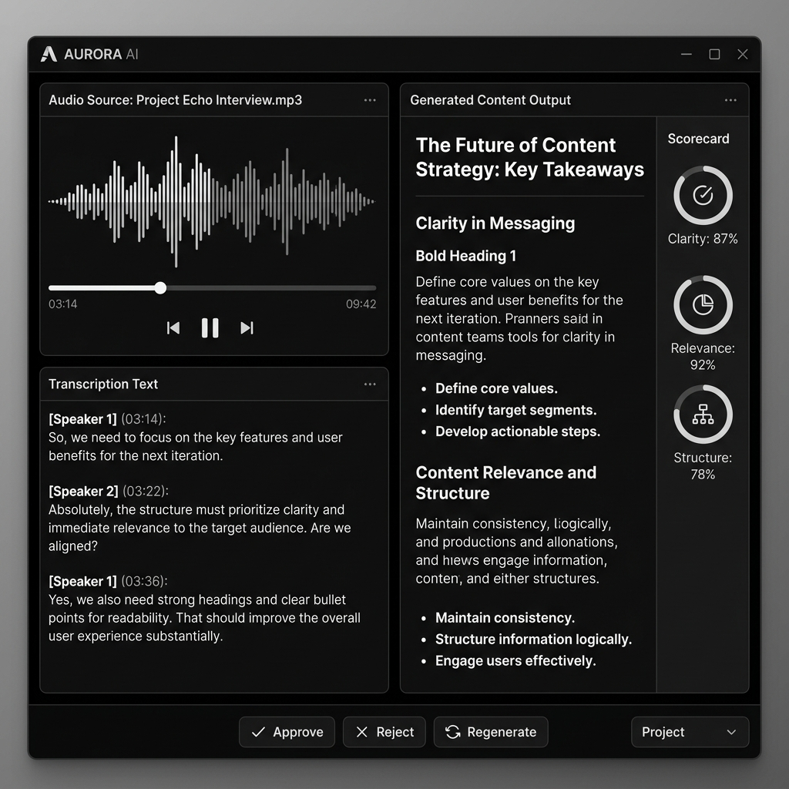

BK Echo
Ecossistema rigoroso de transcrição, recuperação e geração (RAG) com sistema de avaliação (Scoring) de conteúdo. Fluência arquitetural no ecossistema Next.js levada ao extremo.
Contexto & Problema
O processo manual de escutar longas gravações de áudio (reuniões, aulas, entrevistas) e convertê-las em documentos bem estruturados toma horas de trabalho de um analista. Ao invés de apenas "chamar uma API", o Echo constrói um ecossistema completo de transcrição, recuperação e geração.
Arquitetura & Stack
- Server Components (Next.js 14): App Router para manipular a ponte de dados e o streaming de IA sem repassar tokens ou lógicas sensíveis ao navegador.
- OpenAI Whisper: Pipeline de transformação de voz para texto (Speech-to-Text).
- OpenAI GPT: System Prompts estruturados para forçar respostas em JSON validado, impedindo alucinações de formato.
- Scoring: Fluxo de aprovação com sistema de avaliação de conteúdo gerado, permitindo curadoria humana sobre outputs de IA.
- SSR + Middlewares: Roteamento híbrido do Next.js para abstrair lógicas pesadas da camada visual e proteger dados através de Sessões SSR.
Decisões Técnicas
Lidar com arquivos em Next.js exige controle estrito do Edge/Node Runtime. O upload de áudios pode estourar os limites de payload da Vercel (4.5MB). Foi desenhada uma arquitetura via pre-signed URLs (upload direto para Supabase Storage), onde o frontend avisa o backend do upload concluído, que então consome o bucket diretamente para rodar a inferência da OpenAI.
O sistema de Scoring permite que conteúdo gerado por IA seja avaliado em múltiplas dimensões (clareza, relevância, estrutura) antes de ser aprovado, criando um loop de feedback que refina a qualidade dos outputs.


Resultado
BK Echo provou que IA generativa, quando encapsulada em uma UI focada em engenharia e utilidade ao invés de "chatbots conversacionais", gera um salto absurdo em utilidade prática. Não é "chamar uma API": é RAG + Scoring + Aprovação + SSR.